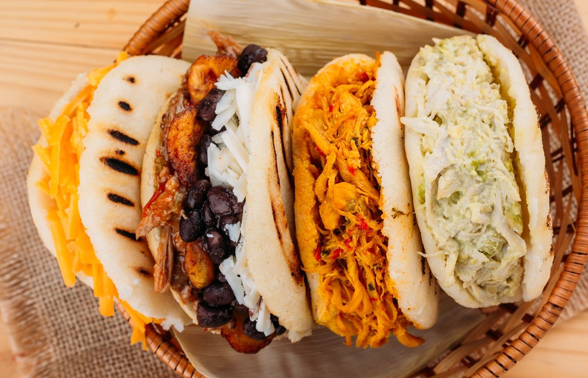

Colombian Arepas
Ingredients:
- 2 cups Cornmeal (P.A.N.)
- 2 ½ cups Warm water
- 1 tsp Salt & 1 tbsp Oil
Instructions:
- Mix water, salt, and oil. Add cornmeal.
- Shape into discs.
- Sear for 5-7 mins per side.
Peruvian Ceviche

Ingredients:
- 1 lb White fish (cubed)
- 1/2 cup Lime juice
- Red onion & Habanero
Instructions:
- Season fish with salt/chili.
- Add onions and lime juice.
- Marinate 5–10 mins and serve.
Brazilian Brigadeiros

Ingredients:
- 14 oz Condensed milk
- 1 tbsp Butter
- 3 tbsp Cocoa powder
Instructions:
- Cook ingredients until thick.
- Cool on a greased plate.
- Roll into balls and sprinkle.
Argentine Asado

Ingredients:
- Skirt Steak
- Coarse salt
- Chimichurri sauce
Instructions:
- Salt the meat.
- Grill on high heat.
- Serve with chimichurri.
Peruvian Ceviche
 Region: South America (Peru)
Region: South America (Peru)
Ingredients
- 500g Fresh white fish (Sea Bass or Tilapia)
- 1/2 cup Fresh Lime juice
- 1 Red onion, thinly sliced
- Fresh Cilantro and Aji Limo (chili)
- Served with: Sweet potato and Corn (Choclo)
Instructions
- Cut fish into small cubes and place in a glass bowl.
- Cover with lime juice, salt, and chili; let marinate for 10-15 mins.
- Toss in red onions and chopped cilantro.
- Serve immediately while the fish is firm and "cooked" by the acid.
Brazilian Picanha Steak
 Region: South America (Brazil)
Region: South America (Brazil)
Ingredients
- 1.5kg Picanha (Sirloin Cap)
- Coarse Sea Salt (Sal Grosso)
- Olive oil (optional)
- Chimichurri sauce (for serving)
Instructions
- Score the fat cap in a diamond pattern (don't cut the meat).
- Rub generously with coarse sea salt.
- Skewer the meat in a "C" shape or cut into thick steaks.
- Grill over high heat, fat-side up first, until medium-rare.
Stuffed Arepas
 Region: South America
Region: South America
Ingredients
- 2 cups Pre-cooked cornmeal (Masarepa)
- 2.5 cups Warm water
- 1 tsp Salt
- Filling: Shredded beef, Black beans, or Cheese
Instructions
- Mix cornmeal, salt, and water to form a smooth dough.
- Form into flat discs about 1 inch thick.
- Grill or pan-fry for 5 minutes per side until a crust forms.
- Slice open halfway and stuff with your favorite fillings.
Argentine Empanadas
 Region: South America (Argentina)
Region: South America (Argentina)
Ingredients
- Empanada dough discs (Tapas)
- 500g Ground beef
- Cumin, Paprika, and Green onions
- Hard-boiled eggs and Green olives
Instructions
- Sauté beef with spices and onions; let cool.
- Place a spoonful of meat, an olive, and a slice of egg on each disc.
- Fold and seal with a "repulgue" (braided edge).
- Bake at 200°C for 20 minutes until golden brown.
Chilean Curanto en Hoyo
 Region: Southern Chile
Region: Southern Chile
Ingredients
- Mixed Shellfish (Clams, Mussels)
- Chicken pieces & Smoked Pork
- Potatoes & Milcao (Potato pancakes)
- Large Nalca (Rhubarb) or Cabbage leaves
Instructions
- Dig a pit and heat stones until glowing red.
- Layer the ingredients: Shellfish first, then meat, then potatoes.
- Cover with leaves and wet sacks to trap the steam.
- Cook for 1-2 hours; the shellfish juices flavor everything below.
Traditional Māori Hāngī
 Region: Oceania (New Zealand)
Region: Oceania (New Zealand)
Ingredients
- Pork, Lamb, and Chicken
- Kumara (Sweet Potato)
- Pumpkin and Cabbage
- Stuffing (Breadcrumbs and Herbs)
Instructions
- Heat volcanic stones in a pit until white-hot.
- Place food in wire baskets lined with cabbage leaves.
- Lower baskets into the pit and cover with wet earth to seal.
- Slow-cook for 3-4 hours until the meat falls off the bone.
Chakalaka & Pap
 Region: Southern Africa
Region: Southern Africa
Ingredients
- 2 cups Maize meal (for Pap)
- Chakalaka: Carrots, Peppers, Onions, Chilies
- 1 can Baked beans
- Curry powder and Ginger/Garlic
Instructions
- Boil water and slowly whisk in maize meal to make a thick porridge (Pap).
- Sauté vegetables with curry powder and ginger.
- Stir in baked beans and simmer until the relish is thick.
- Serve the cold/warm Chakalaka over the hot, buttery Pap.
Patagonian Lamb Asado
 Region: Southern Argentina
Region: Southern Argentina
Ingredients
- 1 Whole lamb (butterflied)
- Salmuera (Brine): Water, Salt, Garlic, Rosemary
- Hardwood for the fire
Instructions
- Mount the lamb on an iron cross (Asador).
- Position it at an angle over a bed of glowing wood embers.
- Baste the meat every 30 minutes with the Salmuera brine.
- Cook slowly for 4-5 hours, rotating once, until the skin is crackling.